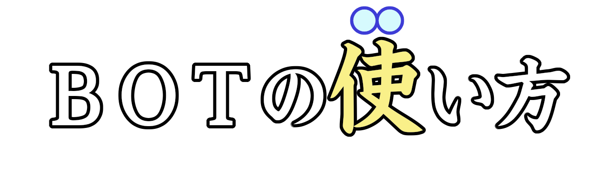

コマンド・機能～マイスちゃんにできること～
漢字でGO!ジェネレーター
/kango_seisei
スラッシュコマンドDiscordのbotで唯一の機能！本家『漢字でGO!』のクイズ画面にそっくりな問題画像を生成します。メッセージ感覚で送ったり、問題を出してみたりしてください。成功すると以下の画像の通りになります。

- 漢字(必須): 画面中央に大きく表示したい漢字や単語を入力します。
- 漢字前: 漢字の左に表示される文字を入力します。
- 漢字後: 漢字の右に表示される文字を入力します。
- ルビ: 漢字の上に振る小さな読みがなを入力できます。
- カラー: 漢字の色が変わります。レベル1~7、その他の色を選択できます。
- 文字数指定: 本家同様に、音読み、訓読み等が選択可能です。一部、ルビの色が変わります。
- ジャンル: 本家同様に、動物、植物・藻類、地名・建造物等が選択できます。
- 問題番号: 保存されるときにファイル名に反映されます。
- メインフォント: セイビタカナワ(B)※有料フォント
- ルビ用フォント: Noto Sans JP Bold
- 全角： 非漢字、JIS第一水準、JIS第二水準、JIS第三水準とJIS第四水準、水準外から一部
- 半角： ローマ字、半角カナ
また、使用可能な文字は漢字を中心に随時追加中です。unicordに登録されている文字であれば、基本的に作れます。
/kango_seisei_id
スラッシュコマンドID指定による漢字でGO！の問題生成をします。固有のレベルとIDを入力して、本家同様の問題をそのまま生成できます。unicordに未登録文字でも本家に登録されてさえいれば、生成可能です。
漢字でGO!関連
/database
スラッシュコマンド漢字でGO！の攻略用データベースのリンクを表示します。
/go_power
スラッシュコマンドGOパワー・称号の確認をします。次の称号まであとどれぐらいかだけでなく、あと何回プレイすればの目安も分かります。
計算機能
/average
スラッシュコマンド平均値の計算をします。
/convert
スラッシュコマンド単位換算をします。
/keisan
スラッシュコマンド数式・方程式の計算をします。数字アタック対策にどうぞご利用ください。
/prime
スラッシュコマンド素数判定をします。素因数分解もします。
/sqrt
スラッシュコマンド平方根の計算をします。
/rate
スラッシュコマンド主要25ヶ国の為替レート
/bmi
スラッシュコマンドBMI計算をします。身長と体重を入力してください。
/keisan_time
スラッシュコマンド時間計算をします。
/hajiki
スラッシュコマンド速さ・時間・距離の計算をします。
/range
スラッシュコマンド電子レンジ加熱時間の計算をします。冷凍食品等を温めたいときにどうぞ。
遊び機能
/agemaki
ボタンインタラクション5×5マスのボタンを使って遊ぶ、激似絵文字間違い探しミニゲームです。
- 画面に表示される25個のボタンのうち、24個は「ダミー nudge」、1個だけが「本物の正解」です。
- 制限時間は30秒！一発勝負の完全独立ゲームです。
- お題となる絵文字のペアは、プール内から毎回完全ランダムで抽選されます。
/guess
スラッシュコマンド数字当てゲーム。最大値と挑戦回数を自由に設定することで、難易度調整が可能となっております。
/janken
スラッシュコマンドじゃんけんをします。
/hoi
スラッシュコマンドあっち向いてホイをします。
ネタ機能
/5000
スラッシュコマンド5000兆円ジェネレーター。5000兆円欲しいときに(？)どうぞ。対応文字は漢GOジェネレーターより多い！成功すると以下の画像の通りになります。
- top: 上の文字を入力します。
- bottom: 下の文字を入力します。
- noalpha: 背景を透過させるかさせないかを選択できます。
- rainbow: 選択すると上の字の縁取りと、下の字の色が虹色になります。
/tips
スラッシュコマンドこのbotのちょっとした小ネタ集。ランダムに一度だけ、小ネタを紹介します。このコマンドでしか見られない隠し機能も...？
/iei
スラッシュコマンド遺影生成。モノクロかカラーかを自由に選択できます。
/solt
スラッシュコマンド塩振りおじさん召喚。下の人に塩を降ったり、清めたりしてください。
塩を振る
メッセージコンテキストメニュー塩振りおじさん召喚。直接塩を振ります。
/fortune
スラッシュコマンド今日の運勢をマイスちゃんがユニークに占ってくれます。
セキュリティ
/ban
管理者専用指定したユーザーをサーバーからキックします。
/kick
管理者専用指定したユーザーをサーバーからキックします。
/timeout
管理者専用指定したユーザーをサーバーからキックします。
その他
/unicode
スラッシュコマンドテキストをUnicodeコードポイント（U+xxxx）に変換、またはその逆の変換を行います。超難読漢字や特殊文字のID検索に便利です。
/translate
スラッシュコマンドテキストを他言語に翻訳します。英語アタック対策としてもご利用ください！
/icon
スラッシュコマンドアイコンを出力します。ダウンロードしたいときにご利用ください。
/help
スラッシュコマンドbotの基本的な使い方や、この公式ウェブサイトへのリンクを表示します。
/char
スラッシュコマンド文字化けを意図的に発生させたり解読したりしたりします。
/world_time
スラッシュコマンド世界時計を表示します。「city」は任意で選択可能で、未選択であなたのいる場所の時間が表示されます。
開発者の名前誤字自動検出機能
機能ユーザーの皆様がチャットで開発者の名前をうっかり誤字ってしまった際、マイスちゃんがそっと自動で検出してツッコミ（または修正）を入れます。開発者の名前は「㐅メ夕タ」と書いて、「いつつめゆうた」と読みますので、お気を付けください。五月蝿かったら、「/yuta_check」をご利用ください。〈br〉※コマンドを入力する必要はありません。マイスちゃんがいつでもチャットを見守っています。
/yuta_check
管理者権限開発者の名前誤字検出の設定。サーバー単位かチャンネル毎にするかオンオフにできます。